2023
- B. Chen, Y. -F. Jiang, H. Xiao*, J. Li*
- Bimetallic single-cluster catalysts anchored on graphdiyne for alkaline hydrogen evolution reaction
- Chinese Journal of Catalysis 2023, 50, 306-313
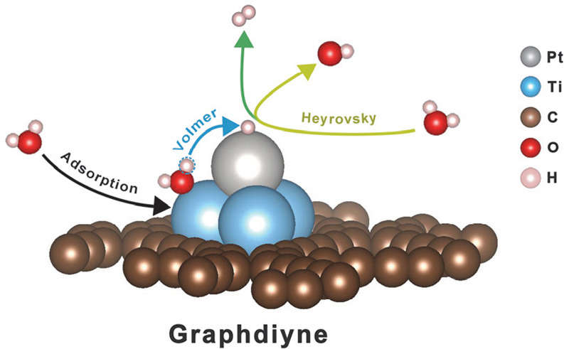
- Z. Wang, W. A. Goddard III, H. Xiao*
- Potential-dependent transition of reaction mechanisms for oxygen evolution on layered double hydroxides
- Nature Communications 2023, 14, 4228
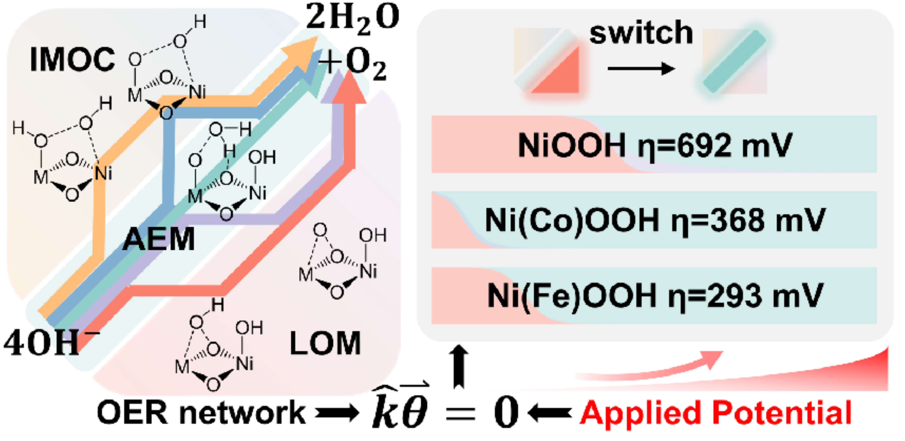
- L. Wang, H. Su, G. Tan, J. Xin, X. Wang, Z. Zhang, Y. Li, Y. Qiu, X. Li, H. Li, J. Ju, X. Duan, H. Xiao, W. Chen, Q. Liu, X. Sun, D. Wang, J. Sun*
- Boosting Efficient and Sustainable Alkaline Water Oxidation on W‐Coooh‐TT Pair Sites Catalyst Synthesized via Topochemical Transformation
- Advanced Materials 2023, 2302642
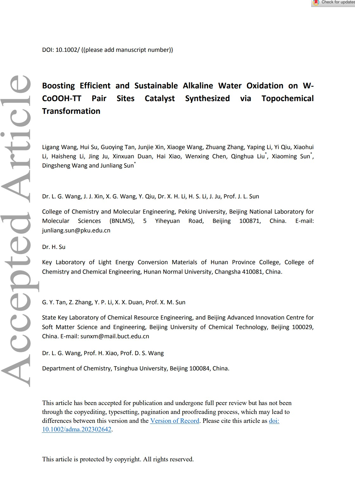
- Z. Xia, H. Xiao*
- Grand Canonical Ensemble Modeling of Electrochemical Interfaces Made Simple
- Journal of Chemical Theory and Computation 2023, 19, 5168-5175
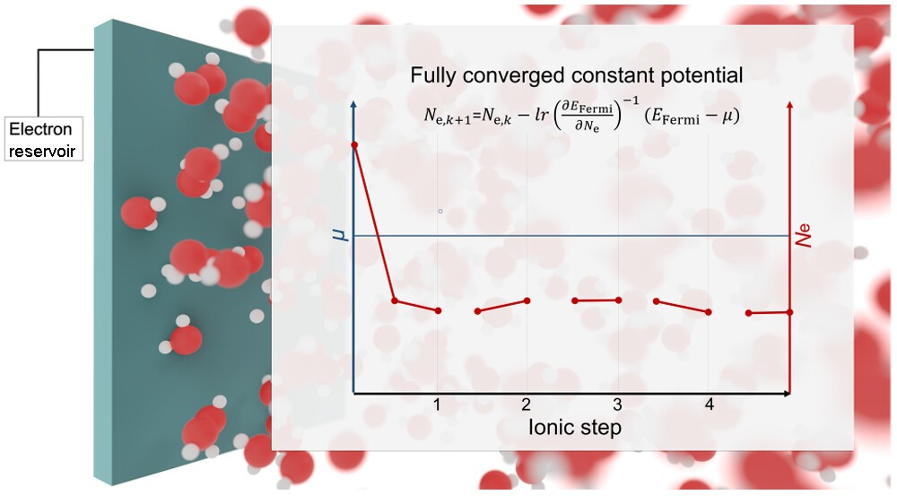
- Y. Pan*, C. Liu, N. Zhang, M. Li, M. Wang, X. Yang, H. -C. Chen, Y. Zhang, W. Hu, W. Yan, H. M. Chen, S. Liu*, H. Xiao*, J. Li, C. Chen*
- Electron induction of atomically dispersed Fe sites by adjacent Te atoms promotes CO2 activation in electroreduction
- Chem Catalysis 2023, 3, 100610
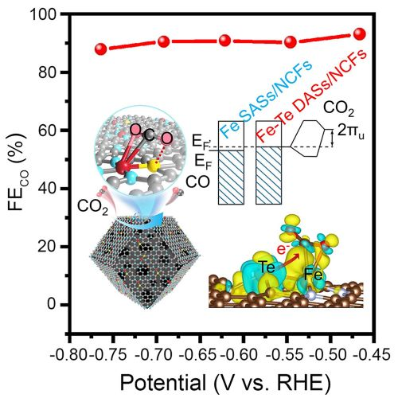
- L. Liu, H. Xiao*
- Inverted Region in Electrochemical Reduction of CO2 Induced by Potential-Dependent Pauli Repulsion
- Journal of the American Chemical Society 2023, 145, 14267-14275
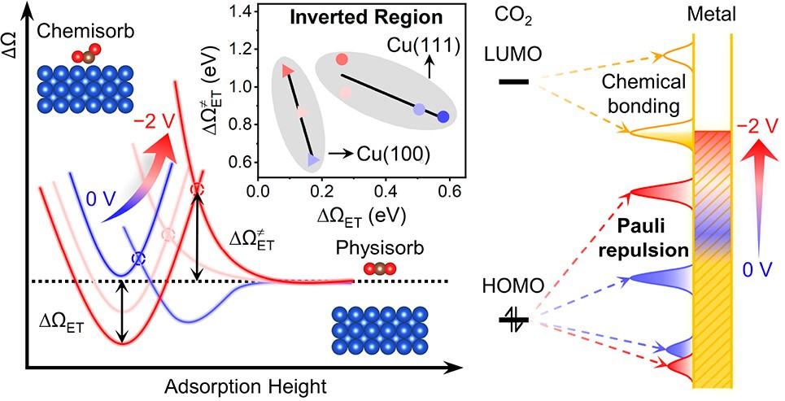
- S. Wei*, L. Li, A. Li, L. Zhang, H. Hu, D. Pang, Q. Zhang, H. Xiao, W. Chen*
- Atomic defects engineering on Fe-N4 sites for boosting oxygen reduction by in-situ ZnO thermal etching strategy
- Chemical Engineering Journal 2023, 465, 142820
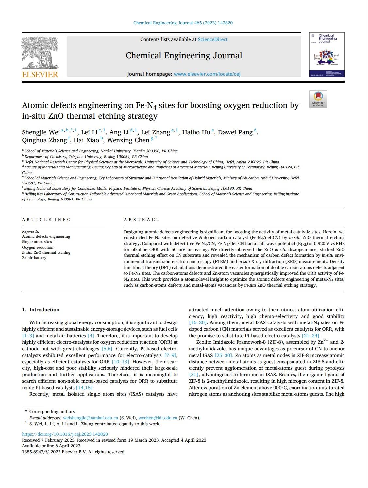
- Z. Zhuang, A. Huang, X., K. Sun, C. Chen*, Q. Peng*, Z. Zhuang, T. Han, H. Xiao, Y. Zeng, W. Yan, J. Zhang, Y. Li*
- p-Block-metal bismuth-based electrocatalysts featuring tunable selectivity for high-performance oxygen reduction reaction
- Joule 2023, 7, 1003-1015

- C. Ma, C. Yang, H. Zhuo, C. Chen, K. Lu, F. Wang, Z. Shi, H. Xiao*, M. Song*, G. Jiang
- Tailored Cl- Ligation on Supported Pt Catalysts for Selective Primary C–H Bond Oxidation
- Journal of the American Chemical Society 2023, 145, 10890-10898
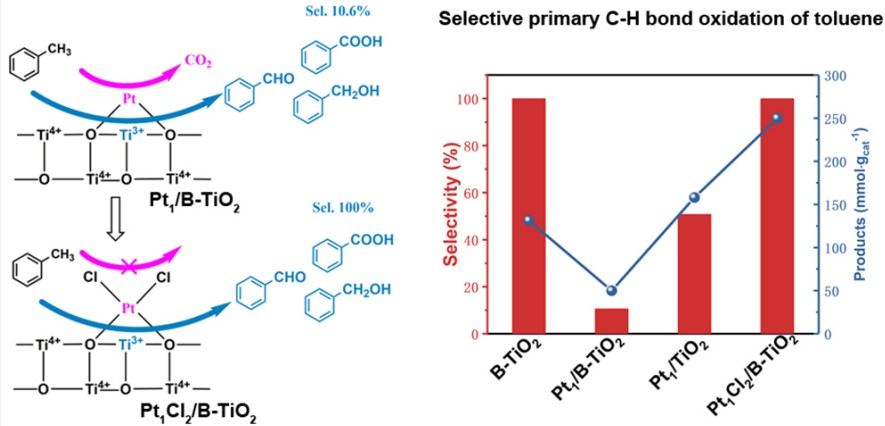
- X. Tan, K. Sun, Z. Zhuang, B. Hu, Y. Zhang, Q. Liu, C. He, Z. Xu, C. Chen, H. Xiao, C. Chen*
- Stabilizing Copper by a Reconstruction-Resistant Atomic Cu–O–Si Interface for Electrochemical CO2 Reduction
- Journal of the American Chemical Society 2023, 145, 8656-8664
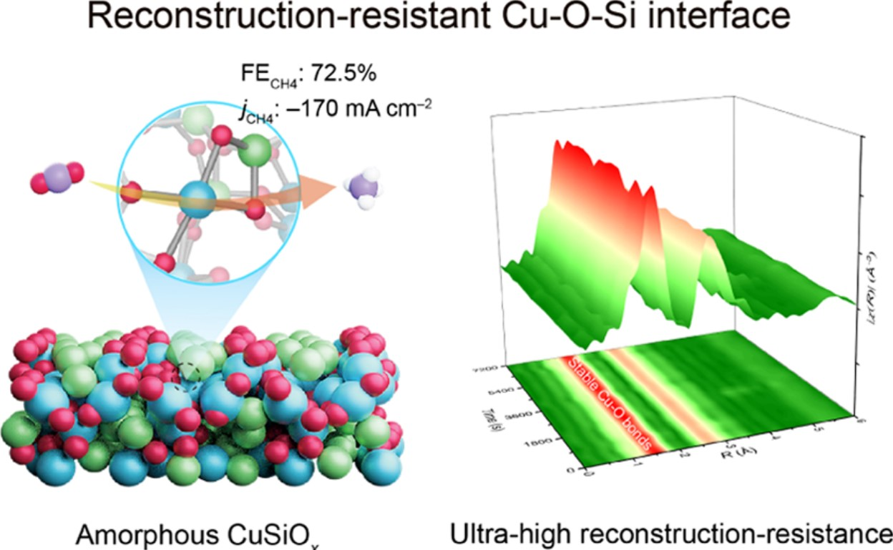
- J. -H. Chen, Z. -Y. Jiang, H. Xiao*, S. Tong*, T. -H. Shi, J. Zhu, M. -X. Wang
- Highly Strained Oxygen-Doped Chiral Molecular Belts of the Zigzag-Type with Strong Circularly Polarized Luminescence
- Journal of the American Chemical Society 2023, 145, 8656-8664
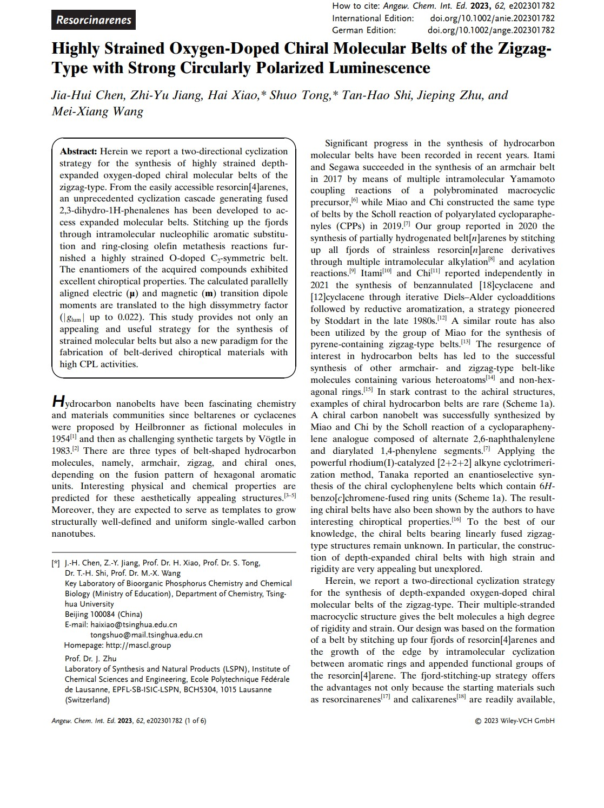
- Z. Xia, Y. Yin, J. Li, H. Xiao*
- Single-Atom Catalysis Enabled by High-Energy Metastable Structures
- Chemical Science 2023, 14, 2631-2639
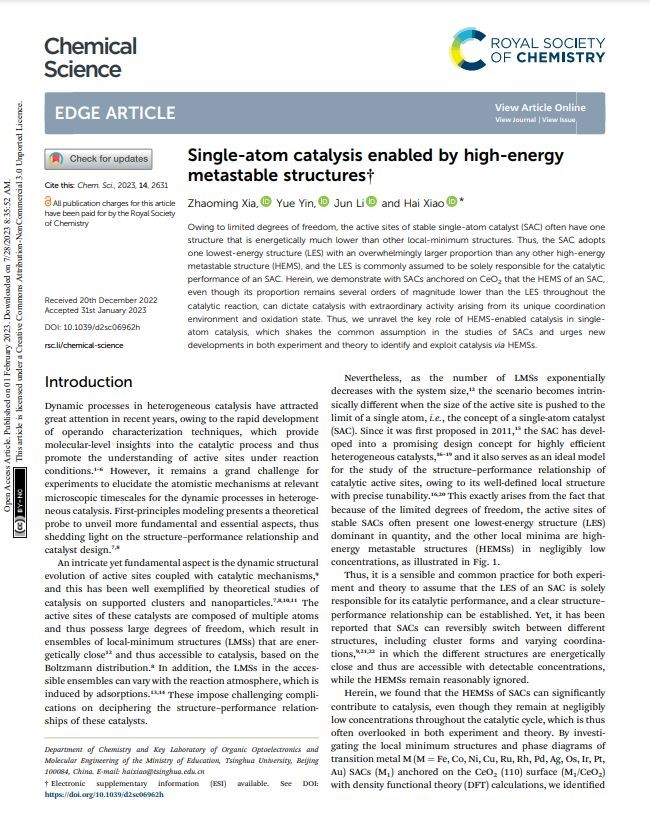
- H. Yang, X. Wang, Q. Liu, A. Huang, X. Zhang, Y. Yu, Z. Zhuang, G. Li, Y. Li, Q. Peng, X. Chen*, H. Xiao, C. Chen*
- Heterogeneous Iridium Single-Atom Molecular-like Catalysis for Epoxidation of Ethylene
- Journal of the American Chemical Society 2023, 145, 6658-6670
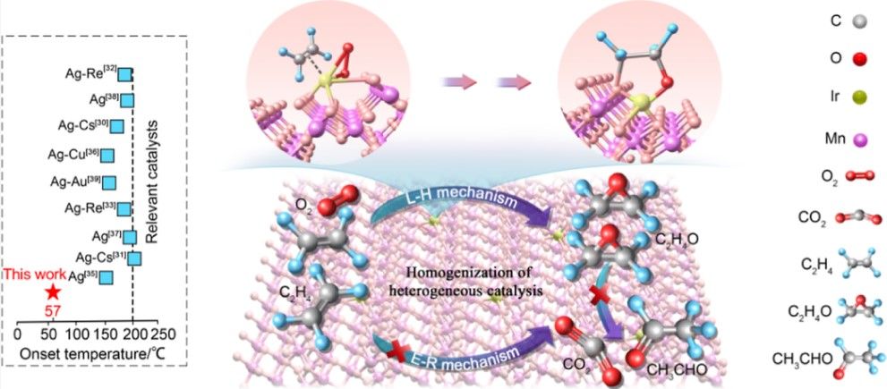
- F. Shao*, Z. Xia, F. You, J. K. Wong, Q. H. Low, H. Xiao*, B. S. Yeo
- Surface Water as an Initial Proton Source for the Electrochemical CO Reduction Reaction on Copper Surfaces
- Angewandte Chemie International Edition 2023, 62, e202214210
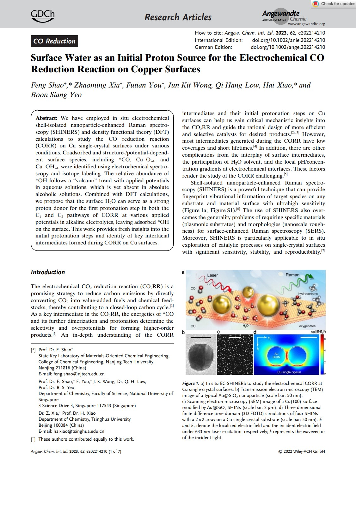
- J. -C. Liu, H. Xiao, X. -K. Zhao, N. -N. Zhang, Y. Liu, D. -H. Xing, X. Yu, H. -S. Hu, J. Li*
- Computational Prediction of Graphdiyne-Supported Three-Atom Single-Cluster Catalysts
- CCS Chemistry 2023, 5, 152-163
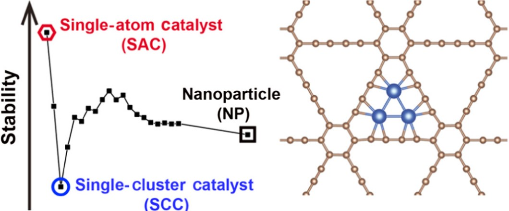
- X. Li, Y. Cao, J. Xiong, J. Li, H. Xiao*, X. Li, Q. Gou, J. Ge*
- Enzyme-metal-single-atom hybrid catalysts for one-pot chemoenzymatic reactions
- Chinese Journal of Catalysis 2023, 44, 139-145
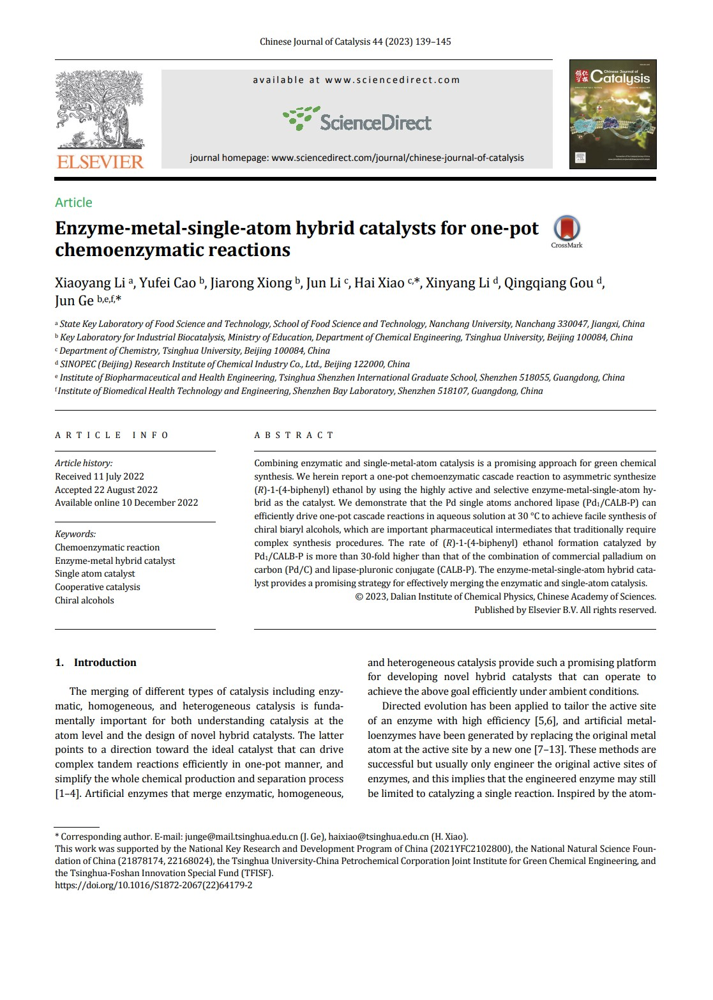